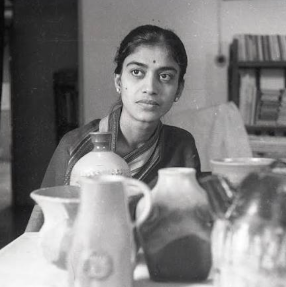

Jyotsna Bhatt was an important Indian ceramic artist and sculptor known for her creative work with clay and ceramics. She studied sculpture at the Faculty of Fine Arts, M. S. University of Baroda, under the guidance of Sankho Chaudhuri. She later studied ceramics at the Brooklyn Museum Art School in New York.
After returning to India, she settled in Baroda, now Vadodara, and taught ceramics at M. S. University for many years. Her artworks were often inspired by nature and included forms of animals, birds, plants and everyday objects.
Bhatt experimented with materials such as stoneware and terracotta and developed her own distinctive approach to ceramic forms, surfaces and glazes. She also contributed to the development and teaching of ceramics in India.